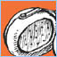

| Pic // | Name // | In Brief // |
|
| Under Your Radar | Epicure's Juan Alban gives noise the rundown on 'Under Your Radar': |
|
| Evaporate | Thanks to Gorgeous' Emma Heeney for answering our nosey questions: |
|
| Self Infatuation | Thanks to J-Ded for telling us about their musical inspirations, their techniques and their personal faves: |
|
| Aloha Mr Hand | Lash's Jess takes the time to answer noise's questions: |

| So Long | Thanks to Miles from Tirany for chatting to noise about 'So Long': |
|
| The Harvest | MC Trey chats with noise about her song 'The Harvest'. |
|
| Ptb | Centipede spends a moment with noise: |
|
| In Line | Oscillate's Owen McKern answers noise's nosey questions: |
|
| Hej | Thanks to Greer (Skulker vocals and guitar) for taking time-out to talk to noise: |
|
| Holiday (just here for a few days) | Katey Noonan spoke to noise about George's 'Holiday': |
|
| I'm All For Believing | Missy Higgins gives an insight into how her song came about: |
|
| More | A big thankyou to Waikiki's Juanita for answering our noise questions: |
|
| Toolbox | Vanessa talks to noise about her song 'Toolbox': |
|

| peacemaker | triphop track with some violins, beats and otherstuff . |
|
| timepasses | a gritty little track, spooky .. |